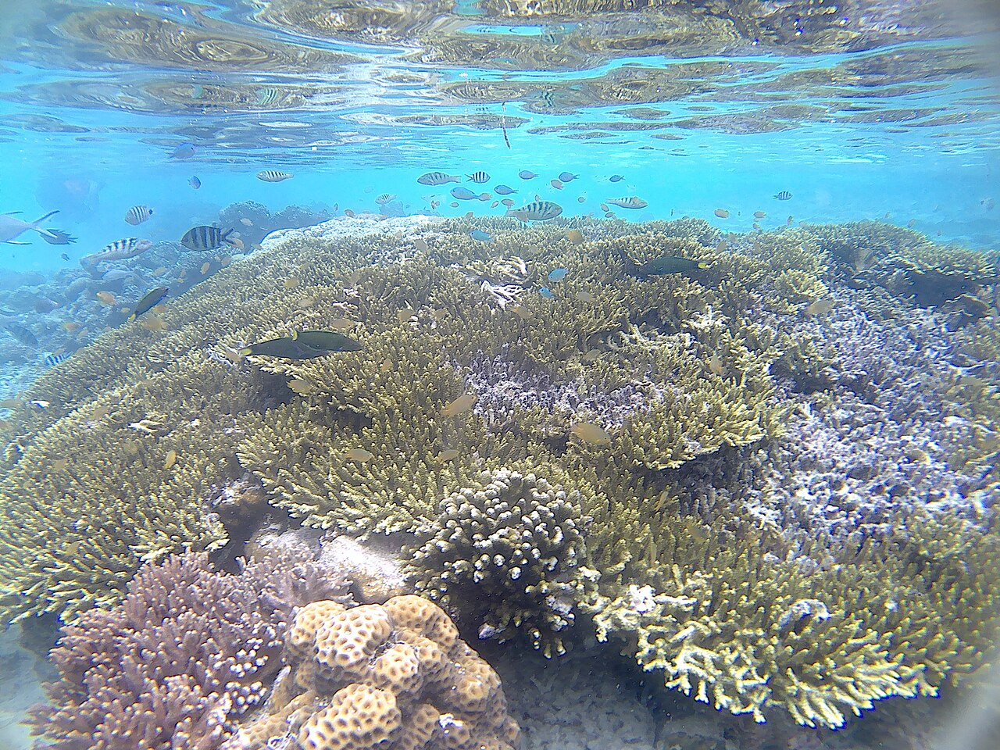

Kurs USD → IDR
—
live
Data terbuka · diperbarui otomatis
Ekonomi, alam, dan kebakaran hutan dan lahan — satu halaman. Setiap angka membawa tahun, sumber, dan umurnya. Yang tidak diketahui ditulis sebagai tidak diketahui.

Kurs dan konteks global. Ditarik real-time dari API terbuka, disimpan sebentar di browser Anda supaya halaman tidak kosong saat jaringan lambat.
Riwayat singkat yang tersimpan di browser ini sejak Anda pertama membuka halaman.
Gambaran jangka panjang: penduduk, tenaga kerja, kemiskinan, dan struktur ekonomi. Angka tahunan World Bank, dengan tahun datanya ditandai di tiap kartu.
Hutan, laut, dan gambut yang menopang negara ini — beserta batas daya tampungnya.


Pada sekitar tahun 1900 tutupan hutan Indonesia diperkirakan 170 juta hektare. Pada akhir abad ke-20 angka itu tinggal di bawah 100 juta hektare. Deforestasi menguat sejak 1970-an dan terus berlanjut; pada 1950 hutan primer masih sekitar 145 juta ha dengan 14 juta ha hutan sekunder di sekitarnya.
Kehilangan hutan primer tahunan sempat turun menjadi sekitar 930.000 hektare pada 2016, tetapi tekanannya tidak hilang — sekitar 3,3 juta hektare hutan telah berubah menjadi perkebunan kelapa sawit. Perkebunan, tambang, dan kolam ikan bersama-sama menyumbang sekitar 5% deforestasi nasional; sisanya datang dari pembukaan lahan dan kebakaran.
Indonesia adalah salah satu negara megadiverse dunia. Di Bird's Head Seascape, Papua, tercatat 574 spesies karang — 95% dari total Coral Triangle dan 72% dari seluruh dunia. Satu lanskap kecil di timur Indonesia memuat hampir tiga perempat spesies karang bumi.
Lebih dari 500 kawasan lindung mencakup 57 taman nasional dan sejumlah cagar alam serta suaka margasatwa, totalnya 36,1 juta hektare. Sembilan taman nasional di antaranya berstatus warisan dunia. Cakupan ini naik dari 10% luas daratan pada era 1980-an.
Coral Triangle — "Amazonnya laut" — membentang 5,7 juta kilometer persegi perairan dan memuat lebih dari 76% spesies karang pembentuk terumbu dunia. Padang lamun di kawasan ini menutup sekitar 58.550 km² dengan 21 spesies lamun.
Indonesia juga memegang mangrove terluas di dunia: 3,40 juta hektare dari total global 15,9 juta ha (estimasi 2025). Asia menyumbang 6,10 juta ha, dan Indonesia sendiri lebih dari seperlima angka dunia.
Indonesia memiliki lahan gambut tropis lebih luas dari negara mana pun. Gambut menyimpan karbon jauh lebih padat daripada hutan di atasnya, tetapi hanya selama tetap basah. Negara ini kehilangan lahan basah sekitar 100.000 hektare per tahun.
Sekali dikeringkan untuk perkebunan atau kanal, gambut berubah dari penyerap menjadi sumber emisi — dan bahan bakar. Inilah simpul yang menghubungkan hutan, kebakaran, dan kabut asap di halaman ini: lahan yang dikeringkan terbakar, dan yang terbakar melepas karbon yang tersimpan berabad-abad.
PM2.5 adalah partikel halus yang paling berbahaya saat karhutla — cukup kecil untuk masuk ke paru-paru dan aliran darah. Angka di bawah berasal dari model atmosfer yang menggabungkan citra satelit dan data permukaan, bukan dari sensor resmi pemerintah.
Baca dengan hati-hati. Angka PM2.5 yang tinggi di Jakarta hampir selalu berasal dari polusi lalu lintas dan industri, bukan asap karhutla. Yang benar-benar menandai karhutla adalah lonjakan di kota gambut: Palangka Raya, Pekanbaru, Pontianak, Jambi, dan Banjarmasin. Satu angka tinggi tidak membuktikan apa pun tanpa melihat polanya.
Bukan bencana yang tiba-tiba. Polanya berulang: kemarau panjang, lahan gambut yang sudah dikeringkan, lalu api yang menyebar di bawah tanah dan bertahan berbulan-bulan.


Data Sipongi/Kementerian Kehutanan per 20 Agustus 2026. Kalimantan Barat menanggung beban terbesar — hampir dua kali provinsi berikutnya, dan sebagian besar lahannya adalah gambut.
| # | Porsi | Proporsi | ||
|---|---|---|---|---|
| Memuat… | ||||
Sepuluh provinsi ini menyumbang mayoritas luas terbakar nasional, tetapi totalnya tidak sama dengan angka nasional: pemerintah sendiri menerbitkan beberapa angka berbeda pada tanggal berbeda (lihat bagian Batas data).
4 orang meninggal dan 347 orang terluka akibat langsung karhutla, menurut Kementerian Kesehatan.
Jauh lebih besar lagi beban penyakit pernapasan: lonjakan ISPA di puskesmas daerah terdampak, terutama pada anak dan lansia. Angka pastinya tidak pernah dirilis lengkap.
CELIOS memperkirakan kerugian Rp39–123 triliun untuk Januari–Agustus 2026 — gabungan kerusakan ekonomi dan biaya kesehatan.
Rentangnya sangat lebar karena metode valuasi berbeda; angka ini estimasi lembaga independen, bukan angka resmi pemerintah.
Ratusan sekolah diliburkan di Sumatera dan Kalimantan saat indeks kualitas udara masuk kategori berbahaya. Setiap hari libur adalah hari belajar yang hilang, dan tidak ada mekanisme penggantian.
Jarak pandang turun drastis saat asap tebal, memaksa penundaan dan pembatalan penerbangan di bandara terdampak. Ini biaya yang langsung terasa, tapi jarang dihitung sebagai kerugian karhutla.
107.465 hektar terbakar — naik sekitar 110% dibanding periode yang sama 2023. El Niño sangat kuat memperpanjang musim kering.
Asap menutup langit Sumatera dan Kalimantan. 18 Agustus, Menteri Kehutanan Raja Juli Antoni menyebut angka 202 ribu hektar.
Sipongi merilis sebaran provinsi: Kalimantan Barat 38.310 ha, disusul Papua Selatan dan NTT.
Menteri Lingkungan Hidup Jumhur Hidayat menyebut ~85 ribu hektar berada di kawasan konsesi, dengan 335 perusahaan terindikasi memiliki titik api — lalu membantah pernyataannya sendiri beberapa hari kemudian.
WALHI merilis analisis: 74% titik panas Kalimantan berada di lahan konsesi — 10.739 titik di HGU sawit, 7.880 di konsesi tambang, 6.905 di PBPH.
Kemenhut mencatat 189 titik panas nasional. Empat hari kemudian turun menjadi 55 titik.
Halaman ini sengaja menampilkan bagian ini. Untuk karhutla, angka yang paling sering dikutip justru yang paling tidak sepakat — termasuk oleh pemerintah sendiri.
107.465 ha (Jan–Jun), 202 ribu ha (Menhut, 18 Agu), dan ~85 ribu ha di konsesi (MenLH, 22 Agu) tidak bisa dijumlahkan atau dibandingkan langsung — cakupan dan metodenya berbeda.
"Kawasan hutan" menurut status hukum dan "luas berhutan" menurut citra satelit bisa berselisih puluhan juta hektare. Angka tutupan hutan di halaman ini memakai definisi yang paling konservatif.
PM2.5 diambil dari model atmosfer Open-Meteo (gabungan satelit dan data permukaan), bukan dari stasiun pemantau pemerintah. Selisih dengan sensor lapangan bisa signifikan.
Rp39–123 triliun berasal dari CELIOS, lembaga independen, dengan metode valuasi yang tidak dirinci penuh. Rentang selebar itu sendiri adalah pesannya.
Setiap indikator di halaman ini, lengkap dengan tahun data, sumber, dan status pengambilannya. Klik judul kolom untuk mengurutkan.
| Sumber | Status | |||
|---|---|---|---|---|
| Memuat data… | ||||
Semua data di halaman ini berasal dari API publik yang bisa diakses tanpa kunci API. Tidak ada server perantara yang menyimpan data Anda.
PDB, PDB per kapita, pertumbuhan, inflasi, populasi, pengangguran, kemiskinan, manufaktur, ekspor, FDI, harapan hidup, akses listrik, pengguna internet, tutupan hutan, energi terbarukan.
api.worldbank.orgPM2.5, PM10, dan US AQI untuk enam kota, dari model atmosfer CAMS.
open-meteo.comHalaman mengambil data langsung dari browser Anda. Hasilnya disimpan di localStorage selama 15 menit (data live) sampai 24 jam (data tahunan) supaya halaman tetap terbaca saat jaringan lambat.
Memuat kredit…
Angka statis diperiksa terhadap sumbernya dan dicatat di DATA-AUDIT.md. Bila sebuah angka tidak bisa diverifikasi, angka itu dibuang — bukan ditebak. Lihat Batas data.